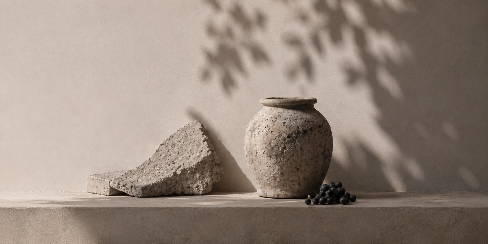
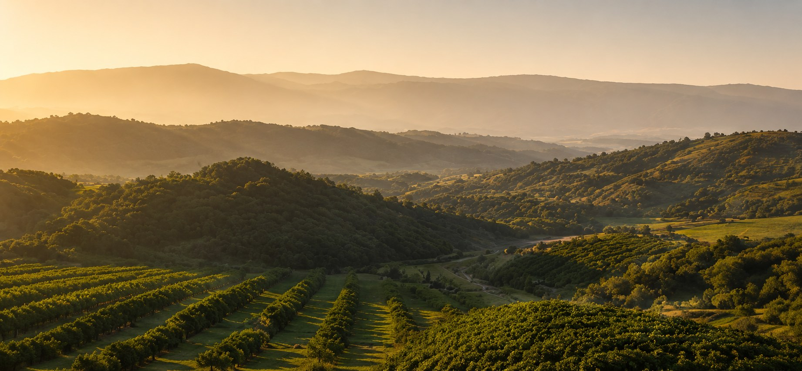
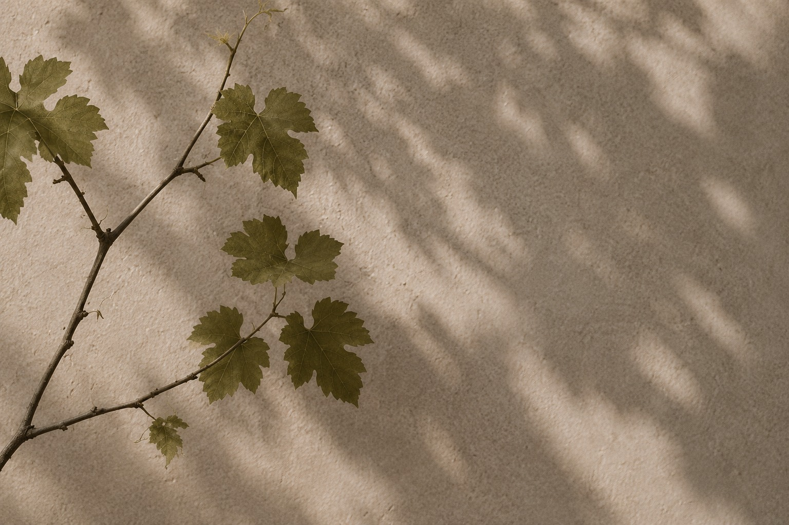

Sulfiți la minim
Atât cât cere legea vinului să călătorească, nimic în plus. Restul protecției vine din igienă și din frig.

Povestea domeniului · Buciumeni
Trei generații, o singură măsură: locul.
scrollează pentru poveste
Capitolul întâi
Între Panciu și Nicorești, acolo unde dealurile își domolesc panta și își întorc fața spre soare, stă Buciumeni. Nu l-am ales noi — el ne-a ales, cu mult înaintea noastră. Vița crește aici de când ține minte dealul, pe un sol care a învățat să dea puțin și să dea bine.
Tot ce facem pleacă de la această origine. Nu aducem nimic din altă parte: nici must, nici grabă, nici obiceiuri străine de parcursul locului. Vinul nostru este, înainte de toate, o mărturie — a unei coline, a unui an, a unei mâini care a știut să aștepte.
45.98°Nlatitudine
27.30°Elongitudine
210 maltitudine medie

Parcursul

Dealul se trezește singur. Noi doar tăiem ce e de tăiat și lăsăm vița să-și amintească drumul.

Curbele de nivel ale colinei, citite așa cum le citește vița: rând cu rând, fără scurtături.

Frunza lucrează în tăcere. Noi ținem măsura umbrei și a apei — nici prea mult, nici prea devreme.
Cu mâna, ladă cu ladă, în decada pe care o hotărăște strugurele, nu calendarul.

Octagrama noastră — opt colțuri pentru opt momente ale anului viticol. Un punct de reper, nu un ornament.

Mustul coboară la răcoare și își începe parcursul. De aici încolo, timpul lucrează în locul nostru.

Îmbuteliem manual, în loturi mici. Fiecare sticlă e o mărturie datată a locului și a anului.
trage sau folosește săgețile
pivnița · 12°C constant
Capitolul al doilea
Vinul nu se face. Vinul se așteaptă. Fermentăm lent, la temperaturi joase, cu drojdiile pe care le aduce strugurele din vie — nu cu rețete care grăbesc ce nu trebuie grăbit. Unele cuve tac săptămâni întregi. Le lăsăm.
Îmbuteliem manual, în loturi mici, atunci când vinul spune că e gata — nu când spune piața. Apoi sticlele coboară înapoi în întuneric, la 12 grade, și mai stau. Un vin tânăr pleacă după câteva luni; o rezervă, după câțiva ani. Diferența dintre ele nu e tehnologia. E răbdarea.
Capitolul al treilea
Patru lucruri pe care le facem puțin — sau deloc.
Atât cât cere legea vinului să călătorească, nimic în plus. Restul protecției vine din igienă și din frig.
Lăsăm vinul să se limpezească singur, prin decantare și iarnă. Ce rămâne în pahar e tot ce a fost în strugure.
Drojdiile locului, nu cele de catalog. Fiecare an fermentează altfel — și exact asta vrem să se audă.
Pe sticlă nu punem promisiuni, ci cuvinte, semne și pauze. O etichetă se citește încet, ca vinul.
șase vinuri · trei game · un singur loc